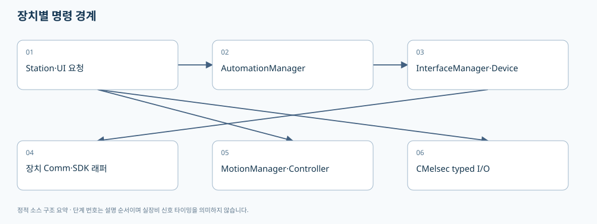

05. Device Interface·Automation1·Motion·MELSEC의 경계
> 기준: A3Drilling/master · 5aee8e58439c9b455cae7c9593c9be986c3e682e. 본 장은 해당 Commit의 소스를 정적으로 읽어 설명합니다. 장비 연결·가공·컴파일을 실행한 결과가 아닙니다.
화면 버튼에서 DLL을 직접 호출한다고 생각하면 추적이 어렵습니다. 이 프로그램은 통신 등록, 장치 명령, Motion 축 제어, MELSEC typed I/O를 나누어 다룹니다. 오류가 났을 때 어느 대상/번호의 어느 경로였는지 먼저 정해야 합니다.

flowchart TD
A[Station·Manual·Monitor] --> B[CAutomationManager]
A --> C[CMotionManager]
A --> D[CMelsec typed read/write]
B --> E[CInterfaceManager → CInterfaceDevice]
E --> F[CComm 등록표 → 장치별 Comm]
F --> G[Automation1/Socket/Serial 등]
C --> H[등록된 Motion Controller]
D --> I[Map·Queue·Read Cache]
1. InterfaceManager의 책임
CInterfaceManager는 장치 정의를 바탕으로 CInterfaceDevice를 만들고, 모듈+번호 또는 NickName으로 장치를 찾으며, 연결/명령/통신 상태를 묶습니다. 등록되지 않은 모듈/번호는 KeyNotFoundException, 중복 NickName은 명시적 InvalidOperationException이 될 수 있습니다. 번호가 있는 장치에서는 이름만으로 호출하는 코드를 새로 넣을 때 중복 가능성을 확인해야 합니다. 장치 찾기와 중복 이름 처리 [오프라인 파일 해설].
ExecuteDeviceFunction은 device.ExecuteFunction을 호출하고 명령/응답 로그를 남깁니다. Vision line count 초과 예외는 알람 callback도 시도한 뒤 다시 던집니다. 통신 예외를 단순히 빈 문자열로 바꿔 UI에서 OK처럼 보이게 처리하는 변경은 원래 오류 경계를 약화시킬 수 있습니다. 명령 로그·예외·Vision 용량 알람 [오프라인 파일 해설].
2. 장치별 Comm은 어떻게 선택되는가
CInterfaceDevice는 연결 옵션을 파싱하고 CComm.Create(Data, ConnectOption)으로 실제 Comm을 구성합니다. Comm 팩토리는 같은 Assembly에서 CCommBase 하위 타입과 CCommTypeAttribute를 찾아 InterfaceType/DeviceName 매칭으로 선택합니다. DeviceNames가 구체적인 등록을 먼저 고릅니다. 맞는 타입이 없으면 CReadyOnlyComm을 반환합니다. 장치 Comm 생성 [오프라인 파일 해설], Attribute 기반 Comm 등록 [오프라인 파일 해설].
| 단계 | 확인 내용 |
|---|
| 정의 | JHMI Interface에 모듈·번호·InterfaceType·옵션이 올바른지 |
| 파싱 | CInterfaceConnectOption.Parse 결과가 의도한 대상인지 |
| 등록 | 해당 Comm 클래스의 Attribute와 Device enum 문자열이 맞는지 |
| 생성 | CReadyOnlyComm으로 fallback하지 않았는지 |
| 연결 | Online/Offline/Simulation과 마지막 오류를 별도로 확인 |
| 응답 | Execute 반환값이 장치별 성공 계약과 일치하는지 |
CReadyOnlyComm은 Connect/Execute 때 “Live ... not ready” 오류 상태를 설정합니다. 타입 생성에 성공했다는 사실만으로 실제 통신 드라이버가 지원된다고 설명하면 안 됩니다. fallback 동작 [오프라인 파일 해설].
3. Simulation은 통신/모션/Script 조건이 분리되어 있다
| 계층 | 확인되는 처리 | 해석상 주의 |
|---|
CInterfaceDevice | simulation이면 SIM:...:OK 응답 생성 | 장비가 실행된 성공이 아닙니다. |
CInterfaceManager.IsSimulation | 등록 장치 전부의 simulation 상태를 집계 | 장치별 혼합 구성과 전체 boolean의 차이 |
CMotionManager | global 및 controller/axis simulation을 고려 | 축의 상태 갱신과 실제 모션 실행을 구분 |
CAutomationManager.RunScript | simulation이면 합성 Task status 반환 | Controller compiler·queue·가공 결과를 검증하지 않습니다. |
| Script generator | AUTOMATION1_SIMULATOR_USE로 Y 출력 선택 | 통신 Simulation과 Script Simulator 조건이 동일하다고 가정하지 않습니다. |
근거: Interface Simulation 집계 [오프라인 파일 해설], SIM 응답 [오프라인 파일 해설], 모션 Simulation과 실제 실행 분기 [오프라인 파일 해설], RunScript Simulation [오프라인 파일 해설], Script simulator Y [오프라인 파일 해설].
4. AutomationManager와 Automation1Comm의 분업
CAutomationManager.UploadScript는 로컬 경로와 Controller 파일명을 정규화한 뒤 AUTOMATION1:SCRIPT|UPLOAD|... 내부 명령을 만듭니다. RunScript는 TaskIndex와 파일명을 검증하고 내부 RUN 명령으로 전달합니다. 이 문자열은 모든 외부 장비가 그대로 이해하는 공통 프로토콜이 아니라 A3 내부 Comm 계층으로 내려가는 표현입니다. Script API와 내부 명령 [오프라인 파일 해설].
| API | 중요한 인자 | 호출 의미 |
|---|
UploadScript | localScriptPath, scriptFileName, number, token | PC 파일을 특정 Automation 대상으로 전송 |
RunScript | scriptFileName, taskIndex, number, token | Controller에 존재하는 파일 실행 요청 |
RunBufferedScripts | scripts 목록, number, queueSize, linesPerCommand, timeoutMs, token | 업로드와 queue 기반 실행 경로 |
RunStagePreparedBufferedScripts | 준비된 scripts, queue 조건 | 준비 때 올린 정확한 파일을 재업로드 없이 실행하는 stageSession 경로 |
RunStagePreparedBufferedScripts의 주석은 LocalScriptPath가 이 경로에서 쓰이지 않으며 큐를 완료/취소까지 소유한다고 명시합니다. 준비된 파일을 실행 시점의 임의 최신 파일로 대체하면 같은 회차라는 보장이 깨집니다. Buffered API와 준비 파일 소유권 [오프라인 파일 해설].
CAutomation1Comm은 _commLock → _statusReadLock 순서를 명시합니다. 일반 명령과 연결/해제는 두 잠금을 통해 충돌을 막고, Buffered feed는 comm lock을 유지하되 read-only status lane을 열어 준비/피드백 조회를 허용합니다. 이 분리 경로에서 잠금 순서를 반대로 추가하면 교착을 만들 수 있습니다. 잠금과 실행상태 필드 [오프라인 파일 해설], 일반/Buffered 실행과 finally 해제 [오프라인 파일 해설].
Automation1 SDK ControllerOperationException은 연결 자체를 Offline으로 바꾸지 않고 명령 오류 응답을 돌려주는 분기가 있습니다. 다른 예외는 SetError를 통해 Offline 상태가 될 수 있습니다. Task가 Fault인 것과 통신이 끊긴 것을 같은 화면 문구로 합치지 않는 것이 좋습니다. 명령오류와 연결오류 분기 [오프라인 파일 해설].
5. MotionManager는 논리 축과 실제 Controller를 연결한다
ExecuteAxisCommand(axisId, command, parameter, token, parameter2)는 AxisId를 정규화하고 등록 정보를 찾습니다. 정의나 축 상태가 없으면 예외를 내고, ValidateAxisCommand를 거쳐 해당 Controller에 명령을 보낸 뒤 내부 상태에 반영합니다. AxisId, DevType, DevNo, 물리 축 식별자를 혼동하면 다른 장치로 명령이 갈 수 있습니다. 축 명령 경로 [오프라인 파일 해설].
초기화에서는 정의된 축을 Controller 단위로 묶어 각 Controller.Initialize에 전달합니다. 전체 Simulation 또는 개별 Controller Simulation이면 실제 초기화를 건너뜁니다. Initialize 반환만으로 모든 물리 축의 원점 완료를 의미한다고 설명하지 않습니다. Controller별 초기화 [오프라인 파일 해설].
6. MELSEC은 일반 문자열 Execute가 아니라 별도 typed I/O다
CreateDevice에서 MELSEC은 외부 통신 상태 경로로 표시됩니다. 해당 Device의 ExecuteFunction을 직접 호출하면 MELSEC commands must use CMelsec typed read/write functions 예외를 냅니다. 따라서 새 Stage 인터페이스를 일반 Socket처럼 ExecuteFunction("...")로 추가하면 안 됩니다. MELSEC external 경로 [오프라인 파일 해설], typed I/O 강제 [오프라인 파일 해설].
CMelsec에는 Map, 요청 Queue, Write Queue/상태, Read Snapshot, CachedValue, polling/backoff를 위한 상태가 분리되어 있습니다. 이는 소스 필드에서 확인되는 구조이며, 본 장이 모든 고객 주소와 신호 순서를 검증했다는 뜻은 아닙니다. MELSEC 큐·맵·캐시·poll 상태 [오프라인 파일 해설].
새 I/F 항목은 맵 정의 → 타입·주소·권한 → 읽기 fresh/cache 기준 → 쓰기완료/상대응답 → timeout/reset → 로그까지 연결해서 검토해야 합니다. 주소가 보인다는 이유만으로 고객 승인된 신호 계약이라고 확정하지 않습니다. Heartbeat, RunEnable, Auto 상태처럼 시간 의미가 있는 신호는 현재값 1만 확인하는 것과 갱신이 살아있다는 것을 구분하여 계약해야 합니다.
7. DLL이 보일 때 읽을 수 있는 것과 없는 것
SDK DLL은 C# 소스와 다릅니다. 이 문서에서는 Automation1/PicoMotor/ACS/XPS 등의 파일명·프로젝트 참조와 공개된 래퍼 소스의 호출을 분석 대상으로 삼습니다. DLL 본문 역컴파일·실행·장치 호출로 내부 동작을 확인하지 않았습니다. BinaryReference가 표시되는 것 자체가 “프로젝트 코드 전체가 인식되지 않았다”는 증거는 아닙니다. C# 래퍼 파일·설정·호출자까지 검색 결과에 연결되어야 실제 코드 이해에 도움이 됩니다.
Offline Studio에서 SDK 내부 동작을 답변해야 할 경우, 공식 API 문서와 사용자가 승인한 SDK 설명자료를 별도 지식 출처로 연결하고 그 버전을 남겨야 합니다. 래퍼에 없는 사양을 파일명만으로 만들어내면 안 됩니다.
8. 변경·오류별 검증 계획
| 조건 | 정적/격리 검증 | 장비 연결 전에 결정할 것 |
|---|
| 새 장치 타입 | Attribute 등록과 매칭/fallback 테스트 | 대상 프로토콜·응답 오류 코드 |
| 중복 NickName | 이름 호출 거부·모듈번호 호출 성공 | 운영 화면의 유일 식별 방식 |
| Buffered 중 status poll | 잠금 순서·취소·Disconnect 경합 | SDK 허용 동시 호출 범위 |
| 명령 Fault | 연결 Online 유지와 Task 오류 구분 | 사용자 복구/재시도 허용 여부 |
| MELSEC 캐시 stale | 마지막 성공시각·fresh 조회·timeout 구분 | 신호별 최대 허용 지연과 heartbeat 기준 |
| Simulation PASS | 실제 호출 횟수 0인지 확인 | 실장비 평가와 분리한 승인 절차 |
다음 읽기: 06. 동시성과 로그.